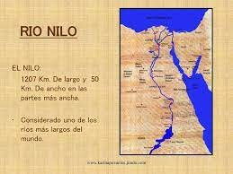

Egipto
Egipto El viejo Egipto
Egipto fue ocupado en tiempos muy remotos por un pueblo procedente de Asia, que pasó al istmo de Suez y rechazó hasta el desierto a la población negra que halló establecida en las márgenes del Nilo. Su civilización es la más antigua de todas las conocidas, y bajo el gobierno de sus reyes indígenas o faraones, llegó a alcanzar alto grado de perfección en las artes, las ciencias y las letras, como lo prueban los muchos monumentos cuyos restos se ven actualmente. Sus dinastías nacionales dejaron de reinar en 525 a. de J. C., época en que el país fue sometido por los persas. Conquistado por los macedonios, estuvo gobernado por los Teodosio (395), vino a formar parte del Bajo Imperio de Oriente; en 640 cayó en poder de los árabes, y en el siglo XVI fue incorporado al Imperio Otomano por el sultán Selim I, y desde entonces vino siendo gobernado por jedives dependientes de la Sublime Puerta. La rebelión del coronel Arabi-Bey, en 1880, ofreció a los ingleses ocasión de ocupar el valle del Nilo. Desde entonces la Gran Bretaña se enseñoreó hasta sus posesiones del Sudán y a fines del 1914 estableció el protectorado inglés sobre Egipto, que terminó en 1922. El sultán Ahmed Fuad fue proclamado rey con el nombre de Fuad I. A su muerte ocurrida en abril de 1952. El general Mohamet Naguid promovió un golpe de Estado que obligó al rey Faruk I a abdicar en su hijo, de siete meses, pero en junio de 1953 se declaró destronado a este rey y se proclamó la República, con el general Naguib como presidente. En noviembre de 1934 éste fue destituido de todos sus cargos y el Gobierno egipcio nacionalizó la Compañía del Canal de Suez, lo que motivó que Francia y Gran Bretaña conjuntamente, iniciasen una acción militar contra esta zona. Días más tarde se acordó la evaluación de las fuerzas invasoras. En 1958 Egipto se federó con Siria y construyeron la República Arabe Unida. En 1961 se disolvió esta unión, pero Egipto mantuvo oficialmente este nombre hasta abril de 1971, en que el de República Arabe de Egipto. En 1973 Egipto sostuvo la cuarta guerra contra Israel. De las tres anteriores (1948-1956 y 1967), la tercera, denominada guerra de los 'Seis Días', fue la que acarreó peores consecuencias para Egipto. Posteriormente este país recuperó la península de Sinaí, ocupada por Israel desde 1967, e inició una política de paz con el vecino Estado. Para mas informacion sobre la historia del viejo Egipto...
Descripcion general de egipto
Estado africano que ocupa el extremo nordoriental de este continente y que limita al Norte con el mar Mediterráneo, al NE con la República de Israel, al Este con el mar Rojo, al Sur por la República de Sudán y al Oeste con Libia. Dos accidentes geográficos son de especial interés al río Nilo, cuyo valle contiene la casi totalidad de la población, y la cordillera Arábica, que corre a lo largo del mar Rojo. El resto del país es un desierto aridísimo. La mayor riqueza agrícola es el algodón y muy notable la ganadería. La pesca se obtiene principalmente en los lagos y lagunas del delta. La producción de petróleo aumenta de año en año; existen modernas refinerías en El Cairo y Alejandría. También tiene importancia la extracción de fosfatos, manganeso y hierro. La principal industria es la textil, seguida de manufacturas de tabaco, azúcar, alimentación. Siderurgia, fertilizantes etc. La población está compuesta principalmente por fellahs o fellahin y coptos, y por minorías de nubios y beduinos. La región mayoritaria es la musulmana. Egipto exporta algodón, arroz, petróleo, frutas, hortalizas, etc. (En árabe Al Qahirah) Capital de Egipto y ciudad más grande de Africa, ubicada en el delta del Nilo, 160 km al sur del mar Mediterráneo. Un bosque de alminares proclama su fe musulmana, pero debajo de ellos se mueve una población de diversas razas. Es una ciudad con dos núcleos. El Cairo antiguo, en el norte, es un enclave amurallado de casas antiguas de piedra que se amontonan en calles angostas y retorcidas, algunas aún sin pavimento, llenas de bazares y del murmullo de las oraciones que se entonan a diario en las 400 mezquitas. Arriba de todo eso, sobre la montaña Moqattam, que divide la ciudad antigua de la nueva, se yergue la Ciudadela, fortaleza construida por el sultán Saladino en 1177 d.C. Hacia el norte y el oeste está El Cairo nuevo, ciudad de trabajo con amplias avenidas y edificios modernos. El Cairo fue originalmente un campamento militar establecido en 641 d.C, a la orilla del río, En el año 969 los gobernantes fatimitas de Libia conquistaron Egipto y comenzaron a construir la ciudad amurallada, que llamaron Al Kahira, que significa «El Triunfador». Saladino amplió la ciudad en el siglo XII y la convirtió en la capital de los sultanes mamelucos, hasta que los turcos otomanos se apoderaron de Egipto, en 1517. Egipto y El Cairo recuperaron su independencia bajo el mando de Muhammad Alí (1769-1849). Alí, a quien los turcos hicieron gobernador en 1806, permaneció en el poder 43 años, logró la autonomía del país y creó el Egipto moderno. En Gizeh, 10 km al sur de la ciudad, se levantan las pirámides. Su población es de 840.000 habitantes.
Datos importantes de Egipto
Religión: La religión oficial de Egipto es el Islam. La mayoría de la población es musulmana sunní (82 - 93%). La minoría más numerosa es la de los cristianos coptos ortodoxos (en torno al 17%). Forma de Estado: La constitución egipcia entró en vigor el 18 de enero de 2014, tras el referéndum del mismo mes. Establece una República semipresidencialista y unicameral. Tras la reforma constitucional de abril 2019 se recupera la Cámara alta, el Senado. El mandato del presidente es de cuatro años, con posibilidad de reelección. El parlamento tiene un mandato de cinco años y es escogido mediante un sistema mixto de distritos uninominales y listas de partidos, con salvaguardas constitucionales para la representación de mujeres, jóvenes, campesinos y coptos. El órgano supremo judicial es el Tribunal Supremo Constitucional, con funciones de revisión constitucional pero no de última instancia, que asume el Tribunal de Casación. División administrativa: Egipto mantiene cinco niveles administrativos: gobernaciones, regiones administrativas, ciudades, distritos urbanos y municipalidades rurales. Las 27 gobernaciones son Alejandría, Asiut, Asuán, Beheira, Beni Suef,Kaliobiya, Dakhaliya, Damietta, El Cairo, Fayum, Gharbeya, Giza, Ismailia, Kafr el Sheikh, Luxor, Matruh, Mar Rojo, Minya, Menufiya, Nuevo Valle, Port Said, Quena, Sharkiya, Sinaí Septentrional, Sinaí Meridional, Suez y Sohag. Los gobernadores de cada región son designados por el gobierno central, y a su vez designan a los gobernadores de niveles inferiores siguiendo un modelo de arriba abajo
La Naturaleza de Egipto
Más del 90% de la tierra de Egipto consiste en áreas desérticas, con un clima extremadamente árido y un desafío casi imposible para el cultivo y para mantener la vida fuera del Valle del Nilo o en los oasis como el Oasis de Siwa y el paraíso tropical de Oasis de Dakhla en el desierto occidental.
Las dunas de arena de los desiertos de Egipto una vez actuaron como protección para el reino de los faraones de la amenaza de los invasores occidentales.
Los centros urbanos de El Cairo, Alejandría y Asuán contrastan con los idílicos centros turísticos del Mar Rojo de Hurghada y Sharm el Sheik, populares entre los turistas por sus hoteles y oportunidades de buceo.
De hecho, los arrecifes de coral del Mar Rojo son algunos de los de mayor biodiversidad en el mundo, y las aguas excepcionalmente claras son perfectas para admirar la vida marina que habita en los arrecifes como el pez payaso, pez globo, pez mariposa, el impresionante pez león y el colorido Pez ángel emperador
Quizás la atracción natural más famosa del país sea el poderoso río Nilo, el río más largo del mundo, que se extiende de norte a sur. Las inundaciones anuales del río, que históricamente fertilizaron el valle del Nilo y alimentaron cosechas, se han detenido desde la finalización de la presa de Asuán en 1970, cambiando las prácticas agrícolas en la zona desde entonces.
Hoy en día, los cruceros por el Nilo son una opción muy popular para los visitantes que desean experimentar los cambiantes paisajes del Valle del Nilo y los monumentos históricos y lugares de interés a lo largo de la ruta. En contraste, el telón de fondo de las montañas cubiertas de nieve del Sinaí en la península del mismo nombre ofrece una vista única en un clima cálido, soleado y seco.
Egipto es un paraíso para los turistas, con una multitud de lugares interesantes para descubrir en su viaje. En la parte superior de la mayoría de las listas se encuentra el Complejo Pirámide de Giza, en las afueras de la capital de El Cairo. Aquí, los visitantes pueden explorar las tres grandes pirámides, el sitio del pueblo de los trabajadores, donde vivían los constructores e ingenieros de las pirámides, y la famosa Gran Esfinge. Este complejo se considera la Maravilla Antigua más antigua del mundo y, sorprendentemente, la única de las maravillas que todavía existen en la actualidad. A través de la mano de obra humana, estas grandes pirámides se construyeron para albergar los restos de los famosos faraones y para almacenar los artículos que se consideraron necesarios para que los fallecidos sobrevivieran con éxito en la otra vida. Ubicados cerca de la frontera con Sudán, los templos de Abu Simbel son otro de los remanentes del antiguo Egipto considerado como un lugar ineludible en un viaje a Egipto. Construidos por Ramsés II, los templos están tallados en la cara de la roca y cuentan con estatuas de figuras humanas gigantes y tallas jeroglíficas intrincadas. Finalmente, el Valle de los Reyes se destaca como un destino de visita obligada por el importante papel que ha desempeñado su excavación en la comprensión de la antigua civilización egipcia. Fue el lugar de enterramiento principal de las figuras reales más famosas del Nuevo Reino, y desde su descubrimiento a finales del siglo XVIII, y el posterior descubrimiento de la tumba de Tutankamón en el sitio, ha sido envuelto en un gran misterio y intriga. Un circuito por Egipto es la manera perfecta de sumergirse en la fascinante historia y el patrimonio del país y experimentar la magnitud y majestuosidad de varios de los monumentos arqueológicos más famosos del mundo.
CulturaDe vuelta en la era de los faraones, Egipto abrió el camino en las artes, creando el primer pigmento de color sintético, “Azul egipcio”, e inventando varios códigos y prácticas de diseño únicos. Hoy en día, el país es uno de los creadores de tendencias culturales árabes, y un líder en la industria del cine en todo el Medio Oriente. Egipto también tiene una rica tradición musical, con influencias tanto del Mediterráneo como de África, y es famoso por ser el lugar de nacimiento de la danza del vientre, la danza característica de la región. En cuanto a la literatura, Egipto se ha destacado por producir el primer escritor de lengua árabe que ganó el Premio Nobel de Literatura, el autor Naguib Mahfouz, quien recibió el premio en 1988 por sus numerosas obras, muchas de las cuales se encuentran en Egipto. Por supuesto, con una historia tan impresionante, la cultura del país tiene fuertes vínculos con el pasado y estos elementos se muestran con orgullo en sus grandes instituciones culturales, como el colosal Museo Egipcio de El Cairo. Si sueñas con sumergirte en la civilización más antigua del mundo, seguir los pasos de los grandes, como Tutankamón y Ramsés II, y explorar un país rico en belleza natural, desde el Mar Rojo hasta el desierto del Sahara, unas vacaciones en Egipto son la mejor opción. Es una experiencia inolvidable, y la elección perfecta para los amantes de la historia, la naturaleza y la cultura.
 Gastronomia
Gastronomia
Debido a su rica historia, antigüedad y excelente ubicación, a orillas del Mediterráneo, la cocina egipcia cuenta con ricos ingredientes procedentes tanto del mar como de los campos que cubren su vasto territorio. Las invasiones y conquistas que han sufrido en el pasado les han dejado como herencia numerosos alimentos de Oriente Medio haciendo que su cocina se asemeje más a la árabe que a la africana. La carne es uno de los alimentos más utilizados en la elaboración de sus platos, donde destaca la de ave o camello. También el pan y las salsas de yogurt, que se asemejan a las turcas y griegas debido a la expansión del Imperio otomano. En la cocina egipcia no puede faltar el arroz, con los que se preparan algunos de sus platos más populares como el mashi y el kushari. También es una gastronomía rica en dulces, donde se pueden encontrar delicias como la baklava. Gastronomía egipcia Fatteh También conocido como fata, este plato árabe tiene sus orígenes en el Antiguo Egipto. Tradicionalmente, muchos de los campesinos lo degustaban durante el desayuno, pues era la comida fuerte del día. Compuesto de pan fresco y pan duro mezclado con yogurt, el fatteh puede ir acompañado de pollo y berenjenas o de garbanzos. Hoy, esta delicia egipcia se puede encontrar en la mayoría de los restaurantes del país, aunque puede presentar variaciones. Kofta Estas bolas de carne picada de vaca o de cordero son muy típicas en los países árabes. Suelen ir sazonadas con especias y cebolla, lo que le otorga un cierto sabor dulce. Se pueden hacer asadas, fritas o cocidas, y suelen ir acompañadas de tomates, pan de pita, arroz o verduras, dependiendo del restaurante y región. Aunque no son únicas de Egipto, debido a su popularidad se pueden encontrar en casi todos los menús. Kebab Muy popular en los países de Medio Oriente, el kebab está compuesto de carne de cordero o de pollo. A diferencia del clásico kebab turco, en Egipto se suele servir como si se tratase de un pincho moruno que se asa al carbón y al que le suelen añadir perejil. Dependiendo del restaurante puede ir acompañado de verduras, también asadas, o de arroz o ensalada. Uno de los más populares es el kebab Hal-la, que se cocina en una olla con cebolla y va acompañado de patatas asadas, además de con arroz y está cubierto con la salsa de la carne. Kushari El kushari es uno de los platos más conocidos de la cocina egipcia, aunque su origen es persa. Está compuesto de una base de arroz, macarrones, lentejas y garbanzos sazonados con un poco de ajo y vinagre y finalmente cubiertos por tomate. Aunque se trata de un plato de origen vegetariano, dependiendo de la región del país y restaurante en ocasiones también se le incluye trozos de carne. El kushari es uno de los platos más sabrosos de Egipto, aunque la salsa de tomate suele ser bastante especiada y para algunos paladares puede resultar un poco picante. Baklava El origen de la baklava se remonta a la antigua Mesopotamia. A lo largo de la historia, debido a las invasiones y conquistas de los pueblos de Oriente Medio, este dulce se comenzó a extender por todo el territorio árabe haciendo que hoy sea una de las delicias de Egipto, Turquía, Irán o Siria, entre otros. Consumido como postre, la baklava se compone de finas láminas de hojaldre bañadas en miel o almíbar que suelen estar rellenas de pasta de almendras, avellanas u otros frutos secos. Se cocinan en el horno y, generalmente, su forma es triangular. Se sirve como acompañamiento del té o café. Paloma rellena En Egipto es habitual encontrarse diferentes platos con carne de ave. Uno de los más populares es la paloma rellena. Su principal característica es que provienen de los criaderos, por lo que se trata de aves sanas que no cuentan con ninguna enfermedad. Aunque tradicionalmente se solían cocinar con motivo de una fecha especial, debido a su popularidad hoy es posible consumirla a lo largo del año. En muchos restaurantes la suelen servir entera, rellenas de trozos de hígado y mollejas finamente troceados y sazonados con sal, pimienta y aceite. Se sirven acompañadas de una ensalada, verduras o arroz. Bamia También llamada como okra, esta hortaliza poco conocida en occidente es muy común encontrarla en Egipto, donde ya en tiempos remotos se utilizaba como ingrediente en deliciosos platos. Aunque existen diferentes especialidades que incorporan la bamia, la más conocida de todas es la que se elabora con tomate y que incluye carne, cebolla, sal, cebolla y zumo de limón. Su principal característica es que aporta nutrientes y fibra, por lo que es muy saludable. Mashi El mashi es uno de los platos egipcios más sencillos, pero no por ello menos sabroso. Se caracteriza porque está compuesto de arroz al que se le incluye carne picada, especias, hojas de parra, tomates, pimientos verdes y berenjenas. En algunos restaurantes, además, se incorporan al final algunos frutos secos como almendras, piñones, nuez moscada y pistachos. Una mezcla sana y sabrosa que no puede faltar en la alimentación de muchos de los hogares del país. Kobeiba Uno de los platos más sabrosos de Egipto. Se caracteriza porque está compuesto por carne de ternera que se corta en pequeños trozos y se sazona con sal, pimienta, así como otras especias. Posteriormente se mezcla con el trigo bulgur y con otros vegetales y, una vez está todo junto, se cocina al horno. En algunos restaurantes, además, les añaden piñones o nueces. Depende de la región donde se deguste. Lo que sí tienen en común es que, independientemente de la parte del país donde uno se encuentre, esta carne se suele consumir fría y va acompañada de salsa de yogurt o hummus. Kunafa Este delicioso postre egipcio adopta el nombre de su ingrediente principal: la kunafa, una masa dulce hilada que se puede encontrar en muchos de los lugares de gastronomía árabe. Su origen es fatimí y ya a lo largo de la historia era consumido por diferentes países de Oriente Medio, los Balcanes y el Mediterráneo Oriental. Aunque adopta numerosas variedades, la kunafa más popular es aquella que está elaborada con queso mozzarella, mantequilla, azúcar y zumo de limón.
Festividades en EgiptoLa cultura y sociedad egipcia siempre estuvo fuertemente vinculada a la religión. Con una mayoría musulmana, muchas de sus festividades y celebraciones tienen que ver con fechas señaladas del Corán como el nacimiento de Mahoma, el momento en el que Abraham entregó a su hijo como ofrenda a Alá, el Ramadán o el Fin de Año según el calendario árabe. Asimismo, los egipcios no olvidan a sus dioses del pasado ni sus tradiciones ancestrales vinculadas a la vida en el campo y a lo largo del río Nilo. Actualmente aún se mantienen algunas de las festividades que agradecen a los dioses la abundancia de las cosechas y los buenos alimentos. El desarrollo del país y su modernización de los últimos años, además, ha hecho posible que El Cairo sea una ciudad viva y cultural donde, cada año, se celebran festivales de cine, literatura y música. Fiestas egipcias Eid Al-Adha – Febrero (9-12) Llamada también como la Fiesta del cordero o del sacrificio, esta celebración de carácter religiosa conmemora el día en el que Abraham iba a matar a su hijo y en su lugar Alá le ofreció un cordero. Durante esos días hay una peregrinación masiva de los fieles a la Meca, mientras lo que se quedan en las ciudades de origen lo celebran ofreciendo las partes de un cordero a los necesitados, amigos y familiares. Sham el Nessim – Abril (16) Con más de 4.500 años de antigüedad, esta festividad egipcia conmemora la entrada de la primavera. En el Antiguo Egipto era costumbre hacer ofrendas a los dioses con los alimentos de temporada para agradecerles las buenas cosechas. Actualmente, esta fiesta atrae a miles de personas que se acercan al Nilo para disfrutar de su gastronomía de temporada como los arenques y vegetales. También cantan, bailan y navegan en faluca a lo largo del río. Ramadán – Mayo (16) El Ramadán se celebra en todos los países árabes dependiendo del calendario lunar. Esta fiesta es conocida porque, durante todo el mes, los musulmanes practican el ayuno desde el alba y hasta que se pone el sol como símbolo de respeto hacía Alá, tal y como dicta el Corán. En Egipto durante esos días se pueden ver restaurantes, cafés y casas decoradas con los colores de esta festividad. Muchos de ellos abren hasta la madrugada y venden algunos productos especiales como frutos secos y dátiles para cuando termine el ayuno diario. Eid al-Fitr – Junio (15) Esta fiesta islámica, que se celebra junto después del Ramadán, celebra la ruptura del ayuno. El Eid al-Fitr comienza por la mañana temprano, momento en el que se pueden oír las oraciones de los fieles en las mezquitas. Después, todos ellos disfrutan conjuntamente de un buen desayuno y visitan las casas de familiares y amigos para degustar los platos típicos del lugar. Como curiosidad, los hombres estrenan ropa nueva de color blanca y los niños reciben regalos. Día del Profeta – Julio (18) Está fiesta musulmana rinde homenaje al nacimiento de Mahoma, el profeta de Alá. En Egipto esta celebración se vive con más intensidad que en otros países árabes. Las mezquitas se iluminan, las calles de El Cairo se llenan de pequeños puestos con poemas, también hay mercados con la comida tradicional del lugar y se puede ver a los locales rezando sus oraciones como homenaje al profeta. Wafaa Al Nil – Agosto (15) Traducida como la “novia al Nilo”, esta tradicional fiesta celebra las buenas cosechas debido a la ausencia de inundaciones tras la construcción de la presa de Asuán. Según la leyenda, antiguamente los egipcios sacrificaban a una virgen ahogándola en el Nilo como ofrenda para que los dioses les ayudasen a obtener buenos alimentos. Una tradición que ha sobrevivido a lo largo del tiempo, pero intercambiando a la mujer por una muñeca de madera o barro a la que se le viste de novia. Festival de Música Árabe – Agosto (2-8) Celebrado anualmente, este festival que se organiza en la capital egipcia de El Cairo reúne a los mejores artistas nacionales e internacionales de la música árabe. Las actuaciones, organizadas por la Ópera de El Cairo, tienen lugar en el Centro de Exposiciones de Guiza, en un amplio recinto donde cada año acuden espectadores de todas las partes del mundo. Fin de Año musulmán – Diciembre (18) El Fin de Año musulmán depende del calendario lunar, por lo que puede variar de un año a otro. En él se celebra el éxodo de Mahoma, por lo que durante toda la jornada los fieles acuden a las mezquitas a rezar y a disfrutar de diferentes ceremonias. El mismo día de Año Nuevo es fiesta nacional, no se trabaja.
Datos mas especificos de egipto
| SUPERFICIE | RIOS/MARES.P | ALTITUD | FORMA DE GOBIERNO | SEGURIDAD |
|---|---|---|---|---|
| 1.002 millones km² | Nilo, Tigris y Éufrates  . | Egipto se encuentra en la latitud 26.820553 y longitud 30.802498. Hace parte del continente de África y está ubicado en el hemisferio norte. |
República democrática |
Egipto es un país que se preocupa por la seguridad de sus turistas y de la población en general. En todos los lugares turísticos, a la entrada de centros comerciales y hoteles, existe una revisión minuciosa tanto de vehículos como de personas, utilizando tecnología, animales para detección de peligro y personal de seguridad, para garantizar tu tranquilidad durante tu estadía. |
| Gastronomia | El museo Egipcio | Atracciones Principales |
|---|---|---|
Al llegar a un país siempre es parte de la experiencia probar la comida local, desde tu llegada al recorrer las calles podrás ver a muchas personas reunidas alrededor de algo similar a una carreta que vende Ful un plato nacional de Egipto, la mejor forma de acompañar este alimento es con unas gotas de limón y con aceite de oliva. Ful, Falafel y Koshary son excelentes opciones como platos vegetarianos, también no se puede irse de Egipto sin probar el Mahshi . Hay una deliciosa sopa de Molokehia ideal para acompañar todo tipo de carne. |
Es una de las colecciones de artefactos antiguos más importantes del mundo, ocupa un lugar privilegiado en el centro de El Cairo, en el lado norte de Midan Tahrir. Dentro del gran edificio abovedado, extrañamente rosado. Contiene los brillantes tesoros de Tutankamón y otros grandes faraones se encuentran junto a los artículos funerarios, momias, joyas, cuencos y juguetes de egipcios |
Atracciones Principales Egipto está famosa por las pirámides de Guiza construidas por los antiguos egipcios pero de verdad el país tiene mucho más que las pirámides impresionantes. Vamos a mencionar algunas de las famosas atracciones, templos y lugares turísticos a lo largo del valle del Nilo |

| Videos informativos | sobre la cultura egipcia | incluyendo su gastronomia |
|---|---|---|
Lista de fuentes y material de apoyo con sus links